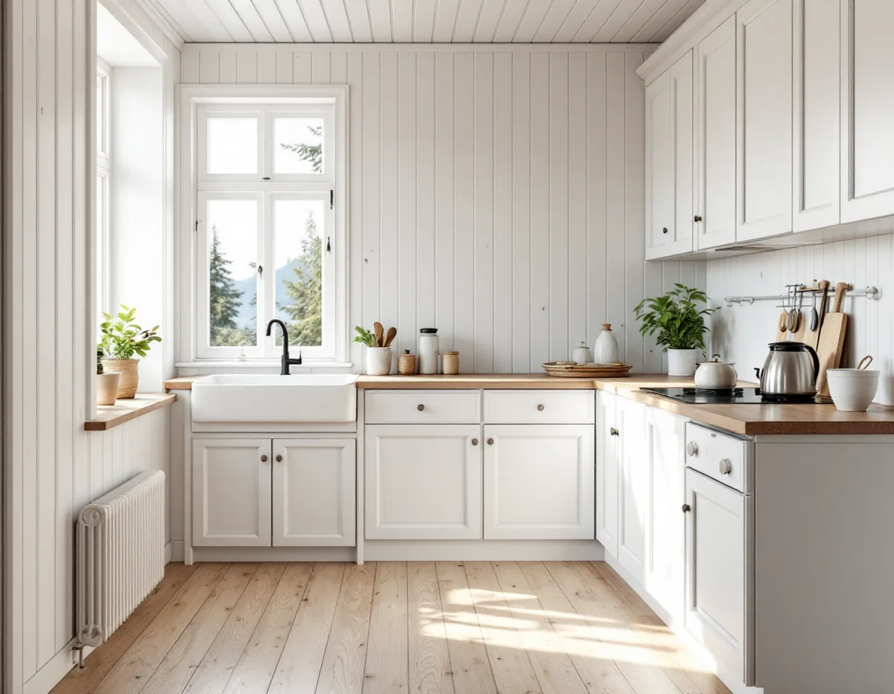
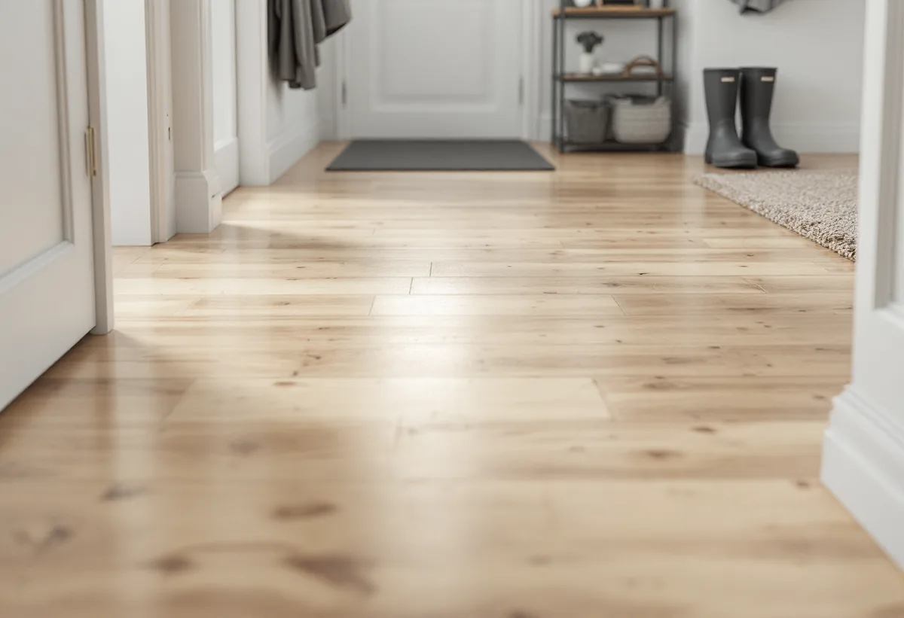

Platsbesök
Vi ser var golvet slits mest och vad det är behandlat med i dag.
Ett trägolv i köket eller hallen slits inte jämnt. Enligt Svenska Byggnadsvårdsföreningen hamnar det mesta slitaget i ett kök längs disk- och beredningsbänkarna, och i hallen kommer grus och skor in. Geal Entreprenad AB slipar och ytbehandlar trägolv i villor och radhus på Lidingö, och i kök och hall väljer vi behandling efter hur ytan faktiskt används.

Lidingö stad antog ett nytt kulturmiljöprogram den 16 december 2024. Det ersätter programmet från 1990 och pekar ut särskilt värdefulla områden, inte enskilda byggnader. Staden beskriver programmet som ett kunskapsunderlag som inte är juridiskt bindande, med råd om hur man som fastighetsägare kan tänka kring underhåll och förändringar.
Vill du veta mer om just ditt hus skriver staden att det finns äldre byggnadsinventeringar för enskilda byggnader, dels från 1970- till 1980-talet, dels från 2013–2015, och att du kan be kundcenter för miljö- och stadsbyggnadskontoret om att ta del av eventuella beskrivningar för din fastighet. Det är ett sätt att ta reda på mer om huset innan man slipar bort en gammal yta.
Lidingö har nio byggnadsminnen, och för dem är det länsstyrelsen som hanterar tillstånd för förändringar. Boverket påpekar att förvanskningsförbudet för särskilt värdefulla byggnader gäller både exteriört och interiört, oberoende av lovplikt, men att det inte är något förändringsförbud.

Svenska Byggnadsvårdsföreningen skriver att golv i kök utsätts för mycket slitage, ofta ojämnt över ytan, och att det är anledningen till att köken fick linoleum- och plastmattor under 1900-talet. All ytbehandling av trägolv behöver underhållas, och resultatet kan bli ojämnt eftersom det mesta slitaget hamnar längs disk- och beredningsbänkar. Det gäller olja, vax, lack och målning.
Jämnast resultat ger enligt föreningen linoljefärg, som kan förnyas i tunna lager. Vill man att träet ska synas är såpskurning den enklaste behandlingen, och den ger en vacker patina. Har golvet tidigare vaxats kan man underhållsvaxa där det blir slitage.
Är köksgolvet av massiv ek skriver föreningen i ett annat svar att man traditionellt använde linoljelack, alltså fernissa, som blir hård och stark genom hartserna. Föreningen är tveksam till att skura en ekparkett med mycket vatten, eftersom stavarna kan börja röra sig och kupa sig. En kompromiss är kokt linolja som värms och gnids ut med trasa.
I hallen kommer grus och skor in, och föreningen påpekar att ett målat trägolv slits ganska mycket där. På ett trägolv kan slitaget också visa sig som gångar, medan resten av golvet ser bra ut. Föreningen tycker att det kan vara värt att först bara olja golvet: skura hela ytan ordentligt med ett pH-neutralt rengöringsmedel, låt det torka och olja sedan. Sannolikt försvinner det mesta av slitaget. Annars finns slipningen kvar som nästa steg, men föreningen påminner om att golvet kommer att se likadant ut efter några år om det inte underhållsoljas mer regelbundet.
Slipas hallen och köket samtidigt som resten av golvet gör vi därför också en plan för hur de mest slitna ytorna ska underhållas efteråt.
Fläckar går ibland att behandla utan slipning. Föreningens artikel om fläckborttagning beskriver att feta fläckar på ek kan tas bort med T-sprit eller aceton, mörka fläckar på ek med utspädd saltsyra eller ibland oxalsyra, och ljusa fläckar med väl utspädd ammoniaklösning eller målarsoda. Föreningen betonar att man ska prova mycket försiktigt eftersom råden inte är allmängiltiga, och vi provar därför först på en undanskymd yta.
Ett nedfettat golv som ska målas med linoljefärg efter slipningen kan ha kvar oljefläckar. Mot dem föreslår föreningen att man stryker schellack på fläckarna och väntar en dag för att se om det fungerar innan hela golvet målas. Om trappor och golv i husets nedre plan finns det mer under golvläggare på Lidingö.
Vi ser var golvet slits mest och vad det är behandlat med i dag.
Fläckar provas på en undanskymd yta innan vi bestämmer om de ska slipas bort.
Slipning, fläckbehandling och ytbehandling står som egna poster.
Kök, hall och övriga rum slipas, och skåpsocklar och bänkkanter täcks.
Såpa, olja, fernissa eller linoljefärg läggs på efter hur ytan används.
Vi går igenom hur köket och gångarna ska underhållas framöver.
Skatteverket räknar slipning av golv som rotarbete. I en villa eller ett radhus ska huset användas som bostad och arbetet göras i den bostad du äger. I en bostadsrätt gäller avdraget arbete innanför väggar, tak och golv när du har underhållsansvaret.
Avdraget är 30 procent av arbetskostnaden, högst 50 000 kr per person och år och högst 75 000 kr tillsammans med rutavdrag. Material och resor ger inget avdrag. Geal drar avdraget direkt på fakturan.
Golvytan, hur slitet köket och hallen är, om fläckar ska behandlas och vilken yta du väljer. Efter ett gratis platsbesök får du ett skriftligt kostnadsförslag.
Parkett, trägolv, klinker och slipning.
Golvläggning i Stockholm →Takbyte, takbesiktning och plåtarbeten.
Takläggare på Lidingö →Brevik, Mölna och Käppala.
Takrenovering på Lidingö →Potten, avloppet och kulturmiljöerna.
Attefallshus på Lidingö →Värdefulla hus, kulör och bidrag.
Fasadmålning på Lidingö →Villastäderna och Brevik på Lidingö.
Fönsterbyte på Lidingö →Fönster i utpekade kulturmiljöer.
Fönsterrenovering på Lidingö →Villastad, källarbadrum och gästhus.
Badrumsrenovering på Lidingö →Villastäder, radhusbyar och berg.
Byggföretag på Lidingö →Radhus, villor och putsfasader på Lidingö.
Fasadrenovering på Lidingö →Souterrängvillor, radhus och äldre villor på Lidingö.
Golvläggare på Lidingö →Villastäder, souterräng och radhusbyar.
Köksrenovering på Lidingö →Villastäder, radhusbyar och stugor på Lidingö.
Målare på Lidingö →Plåt i vind och värdefulla miljöer.
Plåtslagare på Lidingö →Verandor, trappor och dörrar.
Snickare på Lidingö →Nytt material, k-märkning och byggnadsminnen.
Takbyte på Lidingö →Ny tapet med hänsyn till huset.
Tapetsering på Lidingö →Webbkartan, programmet och frivilligt lov.
Tillbyggnad på Lidingö →Behåll stommen, bygg om resten.
Totalrenovering på Lidingö →